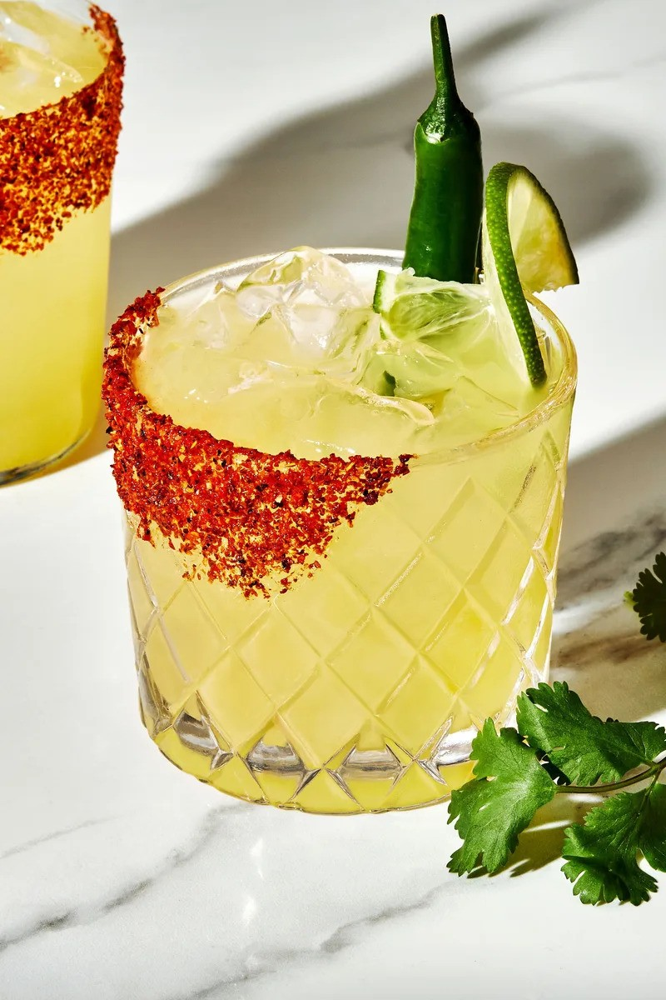

Spicy Margarita
Description
A spicy margarita recipe with juicy lime, good tequila, just a hint
of serrano chile and finished with Tajin seasoning! In other words,
a perfect spicy marg.
Ingredients
- Tequila
- Triple Sec
- Lime Juice
- Serrano Pepper
- Bitters
- Tajín
Directions
- Muddle the chile pepper into the lime juice. Muddle is just
fancy cocktail-making talk for smash. Smash that serrano until
all that lovely heat swirls into the lime juice.
- Add the tequila, triple sec, cilantro, bitters and ice, close the
shaker and shake like CRAZY until you can feel the shaker get
frosty.
- Strain the spicy margarita over fresh ice in your Tajín-rimmed glass.
Sip away!
Home